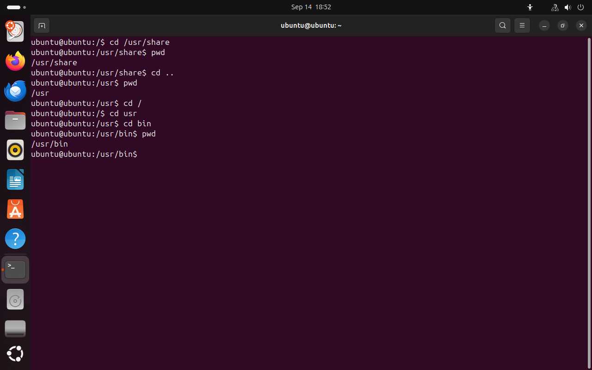
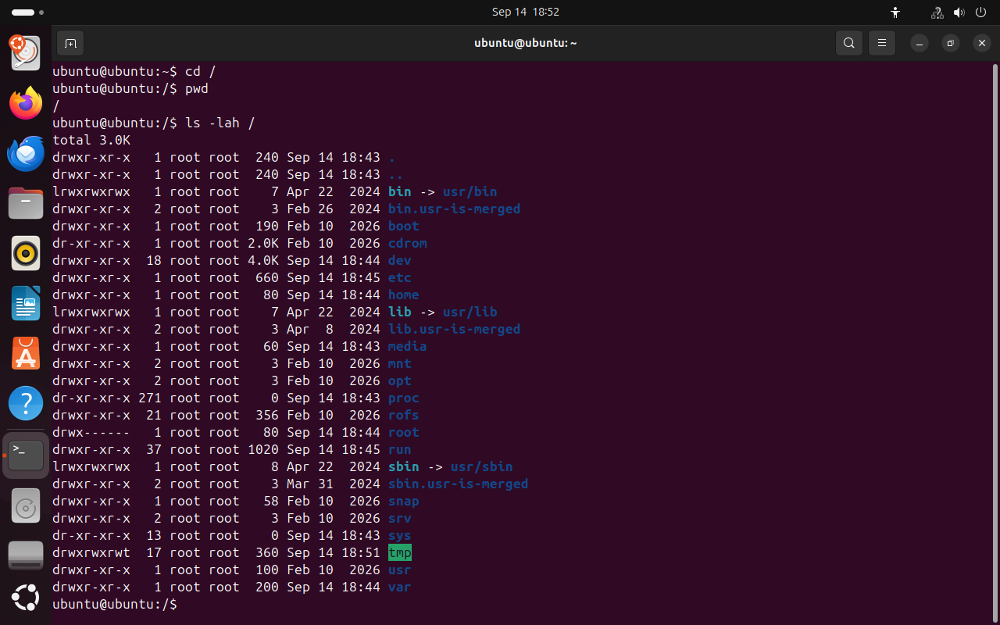
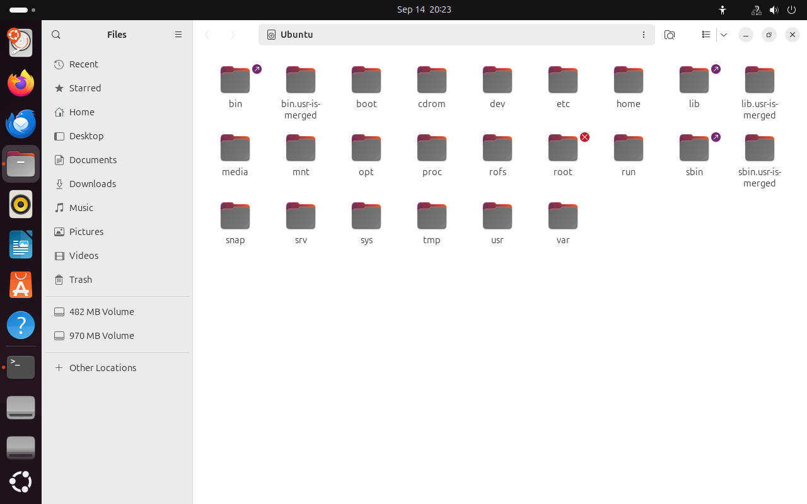
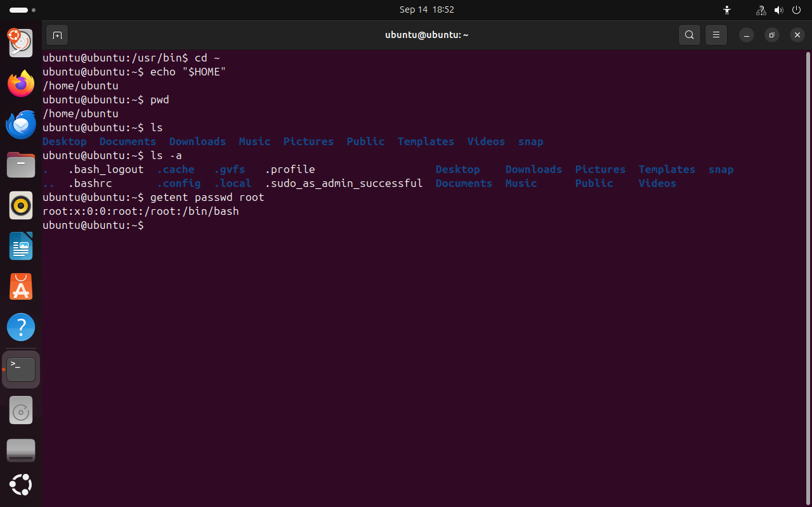
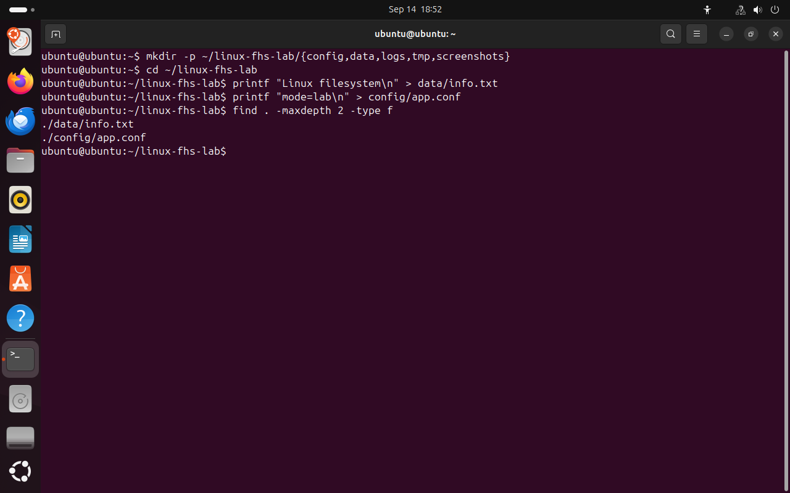

Часть 1 из 8
Дерево каталогов и пути
В этой части разберём, как в Linux устроено пространство имён файлов: единое дерево каталогов, корневой каталог, абсолютные и относительные пути, домашний каталог пользователя.
1.1 Единое дерево каталогов
В Windows каждый том получает собственную букву, и путь к файлу начинается с неё: C:\Users, D:\Backup. В Linux устройство другое. Все файлы, к которым система имеет доступ, образуют одно дерево каталогов, и у этого дерева одна вершина — корневой каталог, который обозначается косой чертой /.
Второй диск, флешка или сетевое хранилище в Linux не получают отдельного имени. Их содержимое подключается к одному из каталогов общего дерева и становится его ветвью. Благодаря этому программе достаточно знать путь к файлу: на каком физическом устройстве он находится, для неё значения не имеет. Как именно происходит такое подключение, разберём в части 7.
Путь к файлу читается как почтовый адрес — от общего к частному: страна, город, улица, дом. Например, /home/ubuntu/notes.txt означает: от корня перейти в каталог home, затем в каталог ubuntu и взять в нём файл notes.txt.
1.2 Командная оболочка и текущий каталог
Работать с файловой системой мы будем в терминале, через командную оболочку Bash. Оболочка печатает приглашение вида ubuntu@ubuntu:~$ и ожидает команду. В приглашении указаны имя пользователя, имя компьютера и текущий каталог.
Текущий каталог — это каталог, в котором оболочка находится в данный момент. От него зависят команды, в которых путь указан не полностью. Узнать текущий каталог можно командой pwd, сменить — командой cd, посмотреть содержимое — командой ls.
Терминал и оболочка — разные программы. Терминал — это окно: он показывает текст и передаёт нажатия клавиш. Оболочка Bash работает внутри терминала: она читает введённую строку, разбирает её и запускает нужную программу.
Сама команда тоже состоит из частей, разделённых пробелами. Первое слово — имя команды, то есть программа, которую нужно выполнить. За ним идут ключи: они начинаются с дефиса и меняют поведение команды. В конце указываются аргументы — то, с чем команда работает, например путь к каталогу.
| Часть команды ls -lah / | Значение |
|---|---|
ls | имя команды: вывести содержимое каталога |
-l | ключ: подробный список, по строке на файл |
-a | ключ: показать и скрытые файлы |
-h | ключ: размеры в килобайтах и мегабайтах |
/ | аргумент: какой каталог показать |
Текущий каталог похож на отметку «Вы находитесь здесь» на схеме торгового центра: от неё отсчитываются все направления. Если вы находитесь в /home/ubuntu и вводите ls Documents, оболочка покажет содержимое /home/ubuntu/Documents.
- 1имя пользователя
- 2имя компьютера
- 3текущий каталог
- 4
$— обычный пользователь, у администратора здесь#
{kind=link}

Весь снимок ↗В приглашении оболочки виден текущий каталог.
Что показывает снимок. Приглашение оболочки состоит из четырёх частей: имя пользователя, имя компьютера, текущий каталог и знак $.
Где это пригодится. По приглашению всегда видно, под каким пользователем и в каком каталоге вы работаете. Прежде чем удалять или перемещать файлы, стоит убедиться, что вы находитесь в нужном каталоге и работаете не от имени root.
cd /# перейти в корневой каталогразбор
cd- сменить текущий каталог
/- куда перейти (корневой каталог)
pwd# вывести текущий каталогразбор
pwd- вывести путь текущего каталога
ls -lah /# подробный список, включая скрытые файлыразбор
ls- вывести содержимое каталога
-l- подробный список: права, владелец, размер, дата
-a- показать и скрытые файлы, имена которых начинаются с точки
-h- размеры в понятном виде: K, M, G
/- что показать (корневой каталог)
- 1результат pwd
- 2буква
lобозначает ссылку, об этом в части 6 - 3обычные каталоги
{kind=link}

Весь снимок ↗Корневой каталог Ubuntu. Каждый из этих каталогов имеет своё назначение, его мы разберём в части 2.
Что показывает снимок. Команда pwd подтверждает, что текущий каталог — корень, а ls -lah выводит каталоги верхнего уровня, в том числе ссылки bin, lib и sbin.
Где это пригодится. С этого списка начинается знакомство с любым незнакомым Linux-компьютером или сервером: по нему видно, какие основные каталоги есть в системе.
Файловый менеджер показывает то же самое дерево в графическом виде:
{kind=link}

Весь снимок ↗Корневой каталог в файловом менеджере Ubuntu.
Что показывает снимок. Графический файловый менеджер показывает то же самое дерево каталогов, что и команда ls.
Где это пригодится. Терминал и файловый менеджер работают с одними и теми же файлами: всё, что сделано в терминале, видно в менеджере, и наоборот. На серверах графического интерфейса обычно нет, поэтому с файлами там работают только в терминале.
1.3 Абсолютный и относительный путь
Путь к файлу можно записать двумя способами. Абсолютный путь начинается с корня и содержит все каталоги от вершины дерева до файла: /usr/share/doc. Такой путь указывает на одно и то же место независимо от того, где находится оболочка.
Относительный путь отсчитывается от текущего каталога и не начинается с /. В нём используются два специальных имени: . — сам текущий каталог и .. — каталог уровнем выше. Если текущий каталог /usr/share, то путь ../bin указывает на /usr/bin. Из другого каталога тот же относительный путь приведёт в другое место, поэтому в скриптах и настройках обычно используют абсолютные пути.
Пример. Вы находитесь в /home/ubuntu. Файл report.txt из каталога Documents можно указать абсолютным путём /home/ubuntu/Documents/report.txt или относительным Documents/report.txt. Если перейти в /tmp, относительный путь перестанет находить этот файл, а абсолютный продолжит.
- /
- etc
- home
- ubuntu
- usr
- bin
- share
ubuntu@ubuntu:/$
Выберите команду: схема покажет, в какой каталог она ведёт.
cd /usr/share# абсолютный путьразбор
cd- сменить текущий каталог
/usr/share- куда перейти (абсолютный путь)
pwdразбор
pwd- вывести путь текущего каталога
cd ..# на уровень вышеразбор
cd- сменить текущий каталог
..- куда перейти (каталог уровнем выше)
pwdразбор
pwd- вывести путь текущего каталога
cd /разбор
cd- сменить текущий каталог
/- куда перейти (корневой каталог)
cd usr# относительный путь от /разбор
cd- сменить текущий каталог
usr- куда перейти
cd bin# относительный путь от /usrразбор
cd- сменить текущий каталог
bin- куда перейти
pwdразбор
pwd- вывести путь текущего каталога
- 1
..— переход из /usr/share в /usr - 2два относительных перехода
- 3итоговый каталог /usr/bin
Цепочка относительных переходов приводит в тот же каталог, что и абсолютный путь.
Что показывает снимок. Цепочка переходов cd .., cd usr, cd bin привела в тот же каталог /usr/bin, что и абсолютный путь.
Где это пригодится. Относительные пути сокращают ввод, когда вы работаете внутри одного проекта. Абсолютные пути нужны в скриптах и настройках, которые могут запускаться из любого каталога.
1.4 Домашний каталог
У каждого пользователя есть домашний каталог — место для его личных файлов и настроек программ. Домашние каталоги обычных пользователей находятся в /home: у пользователя ubuntu это /home/ubuntu. Оболочка позволяет записывать этот путь коротко, символом ~. В свой домашний каталог пользователь может записывать файлы без прав администратора.
Это аналог папки C:\Users\Имя в Windows. У каждого пользователя свой домашний каталог, поэтому файлы разных людей на одном компьютере не смешиваются, и один пользователь не может случайно испортить файлы другого.
Файлы и каталоги, имена которых начинаются с точки, называются скрытыми. Команда ls по умолчанию их не показывает, ключ -a выводит все имена. Так программы хранят свои настройки, например .bashrc или .config. Скрытие влияет только на отображение: доступ к таким файлам определяется правами, как и для любых других.
cd ~# перейти в домашний каталогразбор
cd- сменить текущий каталог
~- куда перейти (домашний каталог)
echo "$HOME"# путь к домашнему каталогу из переменной HOMEразбор
echo- вывести текст или значение переменной
"$HOME"- значение переменной HOME — путь к домашнему каталогу
pwdразбор
pwd- вывести путь текущего каталога
ls# список без скрытых файловразбор
ls- вывести содержимое каталога
ls -a# полный списокразбор
ls- вывести содержимое каталога
-a- показать и скрытые файлы, имена которых начинаются с точки
getent passwd root# домашний каталог пользователя rootразбор
getent- получить запись из системной базы данных
passwd- база учётных записей пользователей
root- учётная запись пользователя root
- 1путь к домашнему каталогу
- 2скрытые файлы и каталоги
{kind=link}

Весь снимок ↗Домашний каталог пользователя ubuntu.
Что показывает снимок. Домашний каталог пользователя — /home/ubuntu; скрытые файлы с точкой видны только с ключом -a; домашний каталог root — /root.
Где это пригодится. Личные настройки программ, например .bashrc или каталог .config, хранятся в скрытых файлах домашнего каталога. Если программа ведёт себя не так, как ожидается, её настройки ищут именно там.
1.5 Рабочий каталог для примеров
Все примеры дальнейших частей выполняются в каталоге ~/linux-fhs-lab. Системные каталоги мы только читаем. Создадим рабочий каталог и два файла, которые понадобятся в частях 6–8.
mkdir -p ~/linux-fhs-lab/{config,data,logs,tmp,screenshots}# создать каталог и подкаталогиразбор
mkdir- создать каталог
-p- создать и все промежуточные каталоги; не выдавать ошибку, если каталог уже есть
~/linux-fhs-lab/{config,data,logs,tmp,screenshots}- какой каталог создать (путь от домашнего каталога; фигурные скобки: оболочка превратит запись в несколько путей)
cd ~/linux-fhs-labразбор
cd- сменить текущий каталог
~/linux-fhs-lab- куда перейти (путь от домашнего каталога)
printf "Linux filesystem\n" > data/info.txt# записать текст в файлразбор
printf- вывести текст по шаблону
"Linux filesystem\n"- шаблон текста (\n — перевод строки)
>- записать вывод в файл; если файл есть, он будет перезаписан
data/info.txt- файл, в который записывается вывод
printf "mode=lab\n" > config/app.confразбор
printf- вывести текст по шаблону
"mode=lab\n"- шаблон текста (\n — перевод строки)
>- записать вывод в файл; если файл есть, он будет перезаписан
config/app.conf- файл, в который записывается вывод
find . -maxdepth 2 -type f# вывести список файловразбор
find- найти файлы и каталоги
.- где искать (текущий каталог)
-maxdepth 2- искать не глубже 2 уровней вложенности
-type f- отбирать только обычные файлы
- 1созданные файлы
{kind=link}

Весь снимок ↗Рабочий каталог и созданные файлы.
Что показывает снимок. Команда mkdir создала каталоги, printf — два файла, а find подтвердила, что файлы на месте.
Где это пригодится. Так быстро создают структуру проекта. Команда find пригодится, когда нужно найти файл по имени или типу в большом дереве каталогов.
Итоги части 1
- Файлы Linux образуют одно дерево каталогов с вершиной в корневом каталоге
/. - Текущий каталог показывает
pwd, переход выполняетcd, содержимое выводитls. - Абсолютный путь начинается с
/и не зависит от текущего каталога, относительный отсчитывается от текущего. - Личные файлы пользователя хранятся в домашнем каталоге
~, имена с точкой — скрытые.
В отчётСнимок с pwd и ls -lah /.